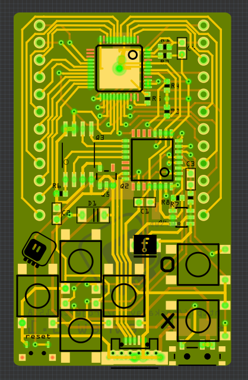

Sanity Check¶
Published on 2017-11-02 in PewPew FeatherWing.
It’s important to periodically revise the project’s goals, both to see if they are still relevant, and to adjust the course of the project to better fulfill them. It’s time to do this for PewPew. I recently did that for PewPew.
The last change in course of the project was almost two months ago, after the Mini Maker Faire Zürich, when I decided that while PewPew Lite seems functional enough, it costs up to $40 to get all the parts together — the feathers, the battery and the PewPew Lite itself. Then I identified the feather board as the most costly part of the whole, and one that I don’t have any control over. So I decided to try and get rid of that part by designing a standalone version of PewPew.
I have to note here, that nobody was complaining about the price, they were, however, complaining about the fact that they have to buy separate things in separate places. Making PewPew standalone would also solve that problem.
I produced four different prototypes for that, with a design for the fifth already on my disk and prepared for ordering. I initially used a smaller PCB, but after struggling with fitting everything on it, I switched back to the Feather form factor, and after @davedarko recently pointed out that I can make it bigger and use the bigger LED matrices, I designed yet another version, shaped more like the GameBoy.
But then, in the mean time, I also worked on µGame — and I realized that the ST7735R 128x128 RGB display on it is cheaper than the IS31FL3733 chip I use for driving the LED matrix, not to mention the LED matrix itself. And it was trivial to make the PewPew games run on µGame too.
Sure, the LED matrix has a lot of advantages compared to the TFT display. It has excellent brightness and viewing angles, while not using a lot of battery power. It’s made of plastic, not glass, and therefore it’s very hard to damage, even when carried in the pocket. Its low resolution and limited colors impose restrictions that stimulate creativity and make it actually much easier to finish the game. But the display also has advantages over the LED matrix. It’s bigger, has more colors, lets me use cute graphics for the “pixels”, doesn’t require me to route dozens of tiny traces or solder TQFP48 packages with insane pitches, is very common and easy to source and looks more like a “real” game console. It also lets me display text in a readable form, which is great for things like error messages.
I don’t want to merge the µGame and PewPew into one project — PewPew has very well defined goals that are different from the “for fun” nature of µGame. But I think that it doesn’t actually make much sense to have an “advanced” version of PewPew, when µGame exists. So I won’t be ordering that last prototype. Instead, I made one last version of the PewPew Lite shield, with only one small change — replacing all the resistors on it with resistor arrays, reducing the number of parts from 17 to 11, and making it better suited for eventual fabrication. I will wait for it to sell out on Tindie, and order another batch, and in the mean time I will work on the workshops.
Honestly speaking, PewPew Lite is really good for the goals of this project, and the standalone version doesn’t really add much. And after looking into assembly services and the prices for them, I realized that I can’t really make it much cheaper than the feathers — not so much that it will matter. Maybe I could get it down to \(30 or \)25, but I’m not sure it’s worth it. And the extra features, like more colors and sound, are not really adding much to the project goals — they are more of a distraction.
So I will stick to the PewPew Lite and work on the content from now on. And new features and developments are going to go into µGame, which is more of an experimental project, without clearly defined goals.